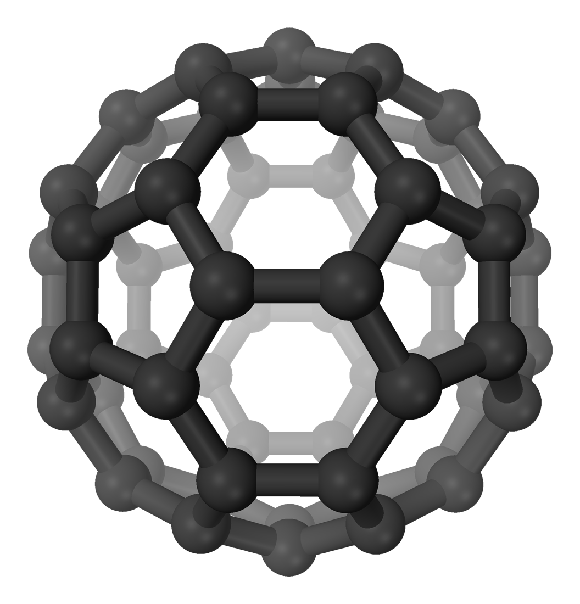

A Brief Derivation of Snell’s Law
We live in the best of all possible worlds. -Leibniz
Light takes the shortest path available to it (with regards to time, not necessarily distance). It turns out this can be generalized to the least-action principle, but we’re not particularly concerned with that here.
Consider a ray of light that refracts into something. It enters at an angle θi and exits at an angle θr (as measured from the normal of the surface). Let the first medium have refractive index n1, and the second have refractive index n2. Then, we can set up the following:
We find t1 and t2 as the time it takes for light to travel in mediums 1 & 2 respectively
$$t_{1} = \frac{n_1}{c}\sqrt{x^2+a^2},$$ $$t_{2} = \frac{n_{2}}{c}\sqrt{(D-x)^2+a^2}.$$
Let t = t1 + t2. By the principle of least time, \(t\) is minimized, and \(t\) is dependent on \(x\) alone. Therefore, we have that its derivative with respect to \(x\) must be \(0,\) and as such $$ \frac{dt}{dx}=0, \, \frac{dt_{1}}{dx}=-\frac{dt_{2}}{dx}. $$
Doing the calculation, we find that this means $$ \begin{align*} \frac{n_{1}x}{\sqrt{ x^2+a^2 }}&=\frac{n_{2}(D-x)}{\sqrt{ (D-x)^2+a^2 }}. \end{align*} $$
Observing that $$\sin \theta = \frac{x}{\sqrt{x^2+a^2}}$$ (and similarly for sin θr), we have the much awaited Snell’s Law: $$ \boxed{n_{1}\sin\theta_{i}=n_{2}\sin\theta_{r}.} $$
Single Slit Diffraction
 (from Townsend’s Quantum Mechanics)
(from Townsend’s Quantum Mechanics)
We want to find the diffraction pattern given by a photon (with wavelength λ ) which passes through a single slit (as opposed to the famous double-slit experiment).
To do this, we can calculate the probability amplitude of a photon hitting detector P at angle θ, and we do this by integrating a differential probability amplitude over the slit: $$ dz_{p} = r \frac{dx}{a}e^{ik(d_{1} + x\sin\theta)}, $$ where d1 is the distance from the top of the slit to point P, and \(x \sin \theta\) is the distance difference between the path from \(P\) at \(dx\) versus when \(x=0\) (this holds true when \(P\) is far enough away for us to assume that the two paths are parallel).
WIth some math, we find that
$$ \begin{align*}\int dz_{p} &= \int_{0}^a \frac{r}{a}e^{ik(d_{1}+x\sin \theta)} \, dx \\\ &=\frac{r}{a}\left[ \frac{e^{ik(d_{1}+x\sin\theta)}}{ik\sin\theta} \right]^a_{0} \\\ z_{p} &= \frac{re^{ikd_{1}}}{ika\sin\theta}\left(e^{ika\sin\theta}-1\right). \end{align*} $$
Now that we have the probability amplitude, we can multiply by its conjugate to get the probability: $$ \begin{align*} z_{p} * z_{p} &= \left(\frac{re^{ikd_{1}}}{ika\sin\theta}\left(e^{ika\sin\theta}-1\right)\right) \left( \frac{re^{-ikd_{1}}}{-ika\sin\theta}\left(e^{-ika\sin\theta}-1\right)\right) \\\ &= \frac{r^2}{k^2a^2\sin^2\theta}(2-2\cos(ka\sin \theta)) \\\ &= \frac{r^2\sin^2\alpha}{\alpha^2}, \, \, \, \alpha=\frac{ka\sin\theta}{2}. \end{align*} $$ This describes the general diffraction pattern dependent on \(.\) Some cool things to note: the intensity is the greatest at \( \theta=0,\) as a result of \(\lim_{ x \to 0} \frac{\sin x}{x}=1,\) (this should make sense - intensity is greatest if the wave keeps going in a straight line).
Interference makes the diffraction pattern vanish when \(a\sin\theta=n\lambda,\) where \(n\) is an integer. An image of a single slit diffraction is given below.

(from this link)
An intuitive explanation of this is if you pair up each of the point sources in the single-slit (each of the \(dx\) values) such that there is \(a/2\) distance between the elements in each pair, they will destructively interfere if their path difference \(\frac{a}{2} \sin\theta\) is some multiple of \(\frac{\lambda}{2},\) because then they’re out of phase by π. At certain values of \(\theta,\) this is true for all point sources, so the intensity reaches a minimum.
Note that you can’t consider single slit diffraction as the limit of many slit diffraction. With many slits, there’s still a finite distance between each slit, while single slit diffraction does not have this distinction. (Plausibly you can get around this if you take the correct limits, but the sort of discrete path interference setup is not applicable to single-slits).
Buckyballs, Yo
Buckminsterfullerene is a carbon complex consisting of sixty carbon atoms arranged in a football shape.

(from Wikipedia, the great \(C^{60}!\))
They’re pretty big. But in 1999, a team in Vienna was able to detect wave-particle duality on a macroscopic level from these molecules!
These buckyballs were observed to have a deBroglie wavelength of \(2.5^{-23} ,\) about 400x smaller than their diameter, by passing them through some microscopic slits and then ionizing them. More info, and the paper, can be found here!
Thanks to Nick Heller for introducing me to much of this!